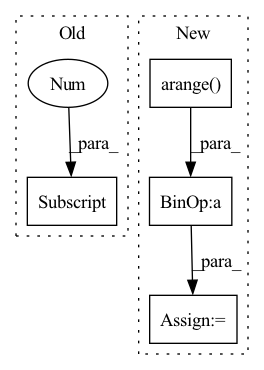

Pattern ID :278

Before Change
last_output = torch.zeros((batch_size, self.d_output), device=device)
if timespans is None:
timespans = x.new_ones(x.shape[:-1]+(1,)) / x.shape[1]
for t in range(seq_len):
inputs = x[:, t]
ts = timespans[:, t].squeeze()
After Change
L = u.size(-1)
if lengths is not None:
assert isinstance(lengths, torch.Tensor) and lengths.ndim == 1 and lengths.size(0) in [1, u.size(0)]
mask = torch.where(torch.arange(L, device=lengths.device) < lengths[:, None, None], 1., 0.)
u = u * mask
device = u.device
batch_size = u.size(0)
seq_len = u.size(1)
hidden_state = [
torch.zeros((batch_size, self.d_hidden), device=device),
torch.zeros((batch_size, self.d_hidden), device=device),
In pattern: SUPERPATTERN
Frequency: 3
Non-data size: 4
Instances
Fragment ID: 926767
Project Name: raminmh/liquid-s4
Commit Name: 52f2ec0442e4b1472915480269dff07788ed7f97
Time: 2022-08-30
Author: mlech26l@gmail.com
File Name: src/models/sequence/mm.py
M Class Name: mmRNN
N Class Name: mmRNN
M Method Name: forward(5)
N Method Name: forward(3)
M Parent Class: nn.Module
N Parent Class: nn.Module
M File Name: src/models/sequence/mm.py
N File Name: src/models/sequence/mm.py
M Start Line: 83
M End Line: 108
N Start Line: 89
N End Line: 123
'>
Before Change
inputs_embeds = inputs_embeds,
)
pooled_wiki = out_wiki[1]
out_pubmed = self.bert_pubmed(
input_ids = input_ids,
attention_mask = attention_mask,
After Change
tok_embed = out_pubmed[0]
bsz, mtok, dim = tok_embed.shape
tok_embed_flat = tok_embed.reshape(-1, dim)
men_idx = torch.arange(bsz).to(tok_embed.device) * mtok + mention_pos_idx
pubmed_embed = tok_embed_flat[men_idx]
pooled_output = torch.cat([wiki_embed, pubmed_embed], dim=1)
'>
Fragment ID: 926762
Project Name: svjan5/medtype
Commit Name: 160813be93a76d6c1b00fdb9c8a86726c73e1803
Time: 2021-03-19
Author: shikharvashishth@gmail.com
File Name: medtype-as-service/server/medtype_serving/server/medtype/models.py
M Class Name: BertCombined
N Class Name: BertCombined
M Method Name: forward(5)
N Method Name: forward(8)
M Parent Class: nn.Module
N Parent Class: nn.Module
M File Name: medtype-as-service/server/medtype_serving/server/medtype/models.py
N File Name: medtype-as-service/server/medtype_serving/server/medtype/models.py
M Start Line: 40
M End Line: 61
N Start Line: 43
N End Line: 64
'>
Before Change
self.register_buffer("inv_freq", inv_freq)
def forward(self, x, context_len = 0):
n, device = x.shape[1], x.device
l = n + context_len
t = torch.arange(l - 1, -1, -1, device = device).type_as(self.inv_freq)
sinusoid_inp = einsum("i , j -> i j", t, self.inv_freq)
After Change
def forward(self, qlen, klen):
device = self.relative_attention_bias.weight.device
q_pos = torch.arange(qlen, dtype = torch.long, device = device)
k_pos = torch.arange(klen, dtype = torch.long, device = device)
rel_pos = k_pos[None, :] - q_pos[:, None]
rp_bucket = self._relative_position_bucket(rel_pos, causal = self.causal, num_buckets = self.num_buckets)
values = self.relative_attention_bias(rp_bucket)
return rearrange(values, "i j h -> () h i j")
// main classes
'>
Fragment ID: 926774
Project Name: lucidrains/memformer
Commit Name: 7ec1c1f60129a90b9abc6fd3b893a4ceb16f98e0
Time: 2020-10-31
Author: lucidrains@gmail.com
File Name: memformer/memformer.py
M Class Name: SinusoidalEmbedding
N Class Name: RelativePositionBias
M Method Name: forward(3)
N Method Name: forward(3)
M Parent Class: nn.Module
N Parent Class: nn.Module
M File Name: memformer/memformer.py
N File Name: memformer/memformer.py
M Start Line: 53
M End Line: 58
N Start Line: 71
N End Line: 77